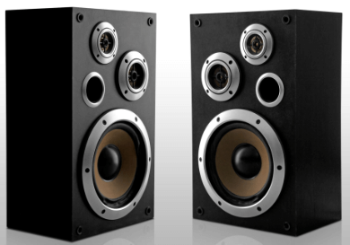
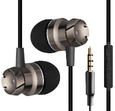

The output device displays the result of the processing of raw data that is entered in the computer through an input device. There are a number of output devices that display output in different ways such as text, images, hard copies, and audio or video. They bridge the gap between digital data and human perception, letting users engage with computer-generated information. Understanding the many forms of output devices and their importance in computing is essential for making informed decisions while selecting the right devices for certain applications.
Output devices can be categorized into four main types based on the nature of their output.
Visual Output Devices: These devices display processed data as text, images, or video. Examples include monitors and projectors, which allow users to view information on screens or project it onto larger surfaces.
Data Output Devices: These devices provide machine-readable output for further processing or storage. Plotters and 3D printers fall into this category, allowing users to create physical representations of data or objects.
Print Output Devices: Printers produce hard copies of processed data, such as documents, images, or graphics. They allow for physical documentation and distribution of information.
Sound Output Devices: These devices deliver audio output for listening or communication purposes. Speakers and headphones/earphones enable users to hear the sound, whether Music, speech, or other audio content.
Visual output devices are components of computing systems that enable the visual presentation of processed data. Monitors and projectors, for example, play an important role in displaying information to users through text, pictures, or video.
Users can view and analyze information more effectively with visual output devices. They allow for the intelligible display of text, making reading papers, emails, and online sites simpler. These devices also excel in picture presentation, allowing users to see photographs, graphics, and illustrations with accuracy and detail. Video material is additionally improved by visual output devices, resulting in a fascinating viewing experience.
Some of the popular visual output devices are:
Impact Printer
Character Printers
Dot Matrix printersLine printers
Drum printersNon-impact printers
Laser printersThe monitor is the display unit or screen of the computer. It is the main output device that displays the processed data or information as text, images, audio or video.
The types of monitors are given below

CRT monitors are based on the cathode ray tubes. They are like vacuum tubes which produce images in the form of video signals. Cathode rays tube produces a beam of electrons through electron guns that strike on the inner phosphorescent surface of the screen to produce images on the screen. The monitor contains millions of phosphorus dots of red, green and blue color. These dots start to glow when struck by electron beams and this phenomenon is called cathodoluminescence.
The main components of a CRT monitor include the electron gun assembly, deflection plate assembly, fluorescent screen, glass envelope, and base.The front (outer surface) of the screen onto which images are produced is called the face plate. It is made up of fiber optics.
There are three electron beams that strike the screen: red, green, and blue. So, the colors which you see on the screen are the blends of red, blue and green lights. The magnetic field guides the beams of electrons. Although LCDs have replaced the CRT monitors, the CRT monitors are still used by graphics professionals because of their color quality.

The LCD monitor is a flat panel screen that is compact and light-weight as compared to CRT monitors. It is based on liquid crystal display technology which is used in the screens of laptops, tablets, smart phones, etc. An LCD screen comprises two layers of polarized glass with a liquid crystal solution between them. When the light passes through the first layer, an electric current aligns the liquids crystals. The aligned liquid crystals allow a varying level of light to pass through the second layer to create images on the screen.
The LCD screen has a matrix of pixels that display the image on the screen. Old LCDs had passive-matrix screens in which individual pixels are controlled by sending a charge. A few electrical charges could be sent each second that made screens appear blurry when the images moved quickly on the screen.
Modern LCDs use active-matrix technology and contain thin film transistors (TFTs) with capacitors. This technology allows pixels to retain their charge. So, they don't make screen blurry when images move fast on the screen as well as are more efficient than passive-matrix displays.
The LED monitor is an improved version of an LCD monitor. It also has a flat panel display and uses liquid crystal display technology like the LCD monitors. The difference between them lies in the source of light to backlight the display. The LED monitor has many LED panels, and each panel has several LEDsto backlight the display, whereas the LCD monitors use cold cathode fluorescent light to backlight the display.Modern electronic devices such as mobile phones, LED TVs, laptop and computer screens, etc., use a LED display as it not only produces more brilliance and greater light intensity but also consumes less power.
The plasma monitor is also a flat panel display that is based on plasma display technology. It has small tiny cells between two glass panels. These cells contain mixtures of noble gases and a small amount of mercury. When voltage is applied, the gas in the cells turns into a plasma and emits ultraviolet light that creates images on the screen, i.e., the screen is illuminated by a tiny bit of plasma, a charged gas. Plasma displays are brighter than liquid crystal displays (LCD) and also offer a wide viewing angle than an LCD.
Plasma monitors provide high resolutions of up to 1920 X 1080, excellent contrast ratios, wide viewing angle, a high refresh rate and more. Thus, they offer a unique viewing experience while watching action movies, sports games, and more.
Personal Computing: Monitors are commonly used in personal computers for everyday operations such as online surfing, document editing, video viewing, and gameplay.
Workstations: Monitors are necessary in professional settings such as workplaces since they serve as the primary display for employees' workstations. Users may view and edit documents, spreadsheets, presentations, and other work-related apps with them.
Design and Multimedia: Graphic designers, video editors, and other multimedia workers rely on monitors. High-resolution monitors with precise color reproduction are utilized to develop and edit visual material.
Gaming: Gaming monitors give immersive experiences with high refresh rates and short reaction times. Gamers use monitors to display fast-paced action, colorful images, and fluid gameplay.
Education: Monitors are used in educational institutions, such as schools and universities, to facilitate learning. They display educational content, multimedia presentations, interactive learning materials, etc.

A projector is an output device that enables the user to project the output onto a large surface such as a big screen or wall. It can be connected to a computer and similar devices to project their output onto a screen. It uses light and lenses to produce magnified texts, images, and videos. So, it is an ideal output device to give presentations or to teach a large number of people.
Modern projects (digital projectors) come with multiple input sources such as HDMI ports for newer equipment and VGA ports that support older devices. Some projectors are designed to support Wi-Fi and Bluetooth as well. They can be fixed onto the ceiling, placed on a stand, and more and are frequently used for classroom teaching, giving presentations, home cinemas, etc.
A digital projector can be of two types:
Liquid Crystal Display (LCD) digital projector: This type of digital projectors are very popular as they are lightweight and provide crisp output. An LCD projector uses transmissive technology to produce output. It allows the light source, which is a standard lamp, to pass through the three colored liquid crystal light panels. Some colors pass through the panels and some are blocked by the panels and thus images are on the screen.
Digital Light Processing (DLP) digital projector: It has a set of tiny mirrors, a separate mirror for each pixel of the image and thus provide high-quality images. These projectors are mostly used in theatres as they fulfill the requirement of high-quality video output.
Education: Classrooms and educational institutions make heavy use of projectors. Teachers may use projectors to show large groups of pupils instructional materials, presentations, movies, and interactive items.
business Presentations: In corporate settings, projectors are vital for giving presentations and sharing information with clients, colleagues, or stakeholders. Presenters can use them to offer slideshows, charts, graphs, and other visual aids.
Home Theatre: Projectors are commonly used in in-home theatre systems. They provide a cinematic experience for customers by projecting movies, TV shows, or streaming material onto a huge screen.
Events and Conferences: Projectors are essential for events, conferences, and seminars. They are used to show keynote speeches, slideshows, movies, and live demonstrations to a big group.
Digital Signage: Projectors are employed in digital signage applications to display advertisements, information, or dynamic content on large screens in public spaces, retail stores, or corporate environments.
Art Installations: Projectors are used by artists and designers to create immersive art installations. They project images, videos, or interactive visuals onto walls, buildings, or other unconventional surfaces, transforming spaces and providing unique visual experiences.
Print output devices are essential components of computing systems that enable the generation of hard copies of processed data. These devices, commonly known as printers, allow users to obtain physical copies of documents, images, or other types of information.
Print output devices offer several advantages. Firstly, they provide a tangible format for information, allowing for easy reading, sharing, and archiving of documents. Hard copies are particularly useful for legal documents, contracts, or important records that require physical signatures or official documentation. Print output devices find applications in various settings, including homes, offices, schools, and businesses. They are used for printing documents, reports, presentations, photographs, labels, and more. From everyday printing needs to specialized requirements, printers provide a reliable and efficient means of generating physical copies of digital content.
Some of the popular print output devices are:
A printer produces hard copies of the processed data. It enables the user, to print images, text or any other information onto the paper. Users can pick from various printer types, such as inkjet, laser, or dot matrix, to meet their printing demands. Printers enable the generation of tangible copies for record-keeping, presentations, marketing materials, and other purposes, from household to professional settings. Printers are essential for personal and commercial use due to their simplicity and adaptability.
Based on the printing mechanism, the printers are of two types: Impact Printers and Non-impact Printers.
Character Printers
Dot Matrix printersLine printers
Drum printersLaser printers
Inkjet printers
The impact printer uses a hammer or print head to print the character or images onto the paper. The hammer or print head strikes or presses an ink ribbon against the paper to print characters and images.
Character Printers
Line printers
Character printer prints a single character at a time or with a single stroke of the print head or hammer. It does not print one line at a time. Dot Matrix printer and Daisy Wheel printer are character printers. Today, these printers are not in much use due to their low speed and because only the text can be printed. The character printers are of two types, which are as follows:
Dot Matrix Printer is an impact printer. The characters and images printed by it are the patterns of dots. These patterns are produced by striking the ink soaked ribbon against the paper with a print head. The print head contains pins that produce a pattern of dots on the paper to form the individual characters. The print head of a 24 pin dot matrix contains more pins than a 9 pin dot matrix printer, so it produces more dots which results in better printing of characters. To produce color output, the black ribbon can be changed with color stripes. The speed of Dot Matrix printers is around 200-500 characters per second.

Daisy Wheel Printer was invented by David S. Lee at Diablo Data Systems.It consists of a wheel or disk that has spokes or extensions and looks like a daisy, so it is named Daisy Wheel printer. At the end of extensions, molded metal characters are mounted. To print a character the printer rotates the wheel, and when the desired character is on the print location the hammer hits disk and the extension hits the ink ribbon against the paper to create the impression. It cannot be used to print graphics and is often noisy and slow, i.e., the speed is very low around 25-50 characters per second. Due to these drawbacks,these printers have become obsolete.
Line printer, which is also as a bar printer, prints one line at a time. It is a high-speed impact printer as it can print 500 to 3000 lines per minute. Drum printer and chain printer are examples of line printers.

Drum printer is a line printer that is made of a rotating drum to print characters. The drum has circular bands of characters on its surface. It has a separate hammer for each band of characters. When you print, the drum rotates, and when the desired character comes under the hammer, the hammer strikes the ink ribbon against the paper to print characters. The drum rotates at a very high speed and characters are printed by activating the appropriate hammers. Although all the characters are not printed at a time, they are printed at a very high speed. Furthermore, it can print only a predefined style as it has a specific set of characters. These printers are known to be very noisy due to the use of hammering techniques.

Chain printer is a line printer that uses a rotating chain to print characters. The characters are embossed on the surface of the chain. The chain rotates horizontally around a set of hammers, for each print location one hammer is provided, i.e., the total number of hammers is equal to the total number of print positions.
The chain rotates at a very high speed and when the desired character comes at the print location, the corresponding hammer strikes the page against the ribbon and character on the chain.They can type 500 to 3000 lines per minute. They are also noisy due to the hammering action.
Non-impact printers don't print characters or images by striking a print head or hammer on the ink ribbon placed against the paper. They print characters and images without direct physical contact between the paper and the printing machinery. These printers can print a complete page at a time, so they are also known as page printers. The common types of non-impact printers are Laser printer and Inkjet printer:
A laser printer is a non-impact printer that uses a laser beam to print the characters. The laser beam hits the drum, which is a photoreceptor and draws the image on the drum by altering electrical charges on the drum. The drum then rolls in toner, and the charged image on the drum picks the toner. The toner is then printed on the paper using heat and pressure. Once the document is printed, the drum loses the electric charge,and the remaining toner is collected. The laser printers use powdered toner for printing instead of liquid ink and produce quality print objects with a resolution of 600 dots per inch (dpi) or more.

The inkjet printer is a non-impact printer that prints images and characters by spraying fine,ionized drops of ink. The print head has tiny nozzles to spray the ink. The printer head moves back and forth and sprays ionized drops of ink on the paper, which is fed through the printer. These drops pass through an electric field that guides the ink onto the paper to print correct images and characters.
An inkjet printer has cartridges that contain ink. Modern inkjet printers are color printers that have four cartridges containing different colors: Cyan, Magenta, Yellow, and Black. It is capable of printing high-quality images with different colors. It can produce print objects with a resolution of at least 300 dots per inch (dpi).
Personal and Home Use: Printers are frequently used in homes to print papers, pictures, and other personal stuff. Individuals can use them to make tangible copies of vital information or photographs for personal use.
Offices and enterprises: Printers are required in offices and enterprises. They print commercial enterprise papers, reports, contracts, invoices, and documents. Employees can utilize printers to create physical copies of crucial information, which aids in communication and record-keeping.
Education: Students and teachers utilize printers at educational institutions such as schools and universities. They are used to print assignments, worksheets, study materials, project reports, and educational tools.
Printing and Publishing: Printers are critical in the publishing and printing industries. They're used on a massive scale to print publications, including newspapers, brochures, flyers, and other published goods.
Advertising and Marketing: Printers are employed in the advertising and marketing industry to create promotional materials such as posters, banners, flyers, business cards, and product labels.
Sound output devices, which allow users to listen to audio material, are a significant component of computing systems. Speakers and headphones, for example, facilitate sound reproduction and improve the whole multimedia experience. There are various advantages to using sound output equipment. They let consumers experience high-quality audio with increased clarity, depth, and richness. Sound output devices improve the entire audio experience by bringing information to the existence, whether or not it is the minute specifics in Music, the immersive sound effects in movies, or the clear voice during a conference call.
These devices have several applications, which include use in homes, groups, amusement venues, and academic institutions. They are used for personal enjoyment, communication, professional audio work, and multimedia jobs. Sound output devices link to other devices, such as smartphones, tablets, and televisions, increasing their versatility and utility.
Some of the popular sound output devices are:
Speakers are important output devices that transform electrical impulses into audible sounds. They're essential to many modern devices, including computers, televisions, music players, and mobile phones. The audio system improves the multimedia experience by providing high-quality audio output, whether listening to the song, viewing films, playing video games, or participating in virtual meetings. They help ensure that consumers enjoy audio material with clarity and depth by contributing to clean and clear sound reproduction.
Stereo Speakers: Also known as 2.0 speakers, stereo speakers comprise left and right speakers. They are the most fundamental speaker, typically found in desktop computers, laptop computers, and tiny audio installations. Stereo speakers offer a simple yet efficient method of reproducing sounds and creating a spatial audio experience.
Surround Sound Speakers: Surround sound speakers provide immersive audio commonly used in home theatre systems. For a surround sound experience, many speakers are carefully positioned around the room. Multiple speakers plus a subwoofer are used in common arrangements like 5.1, 7.1, and 9.1 systems. The number denotes the number of speakers, while ".1" denotes a specialized subwoofer for low-frequency effects. These configurations provide realistic soundscapes, immersing viewers in a more engaging home theatre experience.
Subwoofers: Subwoofers are specialized speakers designed to reproduce low-frequency sounds, also known as bass. They add depth and impact to audio by delivering powerful and deep bass tones. Subwoofers are often used alongside stereo or surround sound systems to enhance the audio experience, specifically in movies, Music, and gaming.

Soundbars: Soundbars are slim and elongated speakers that provide an all-in-one audio solution for TVs and home entertainment systems. They consist of multiple built-in speakers housed in a single enclosure. Soundbars offer improved audio quality compared to built-in TV speakers and can create a simulated surround sound effect. They are popular for those seeking a compact and convenient audio setup.

Portable Speakers: portable speakers are small, lightweight, wireless devices designed for audio enjoyment on the go. Customers may additionally listen to songs and other audio files from anywhere. Bluetooth audio systems are available in various styles and sizes, as well as outdoor audio systems with long battery life and waterproof audio systems for use by the pool.
Bookshelf speakers: Bookshelf speakers are placed on a shelf, table, or stand. They provide a good combination of size and sound insulation, making them excellent for small to medium-sized rooms. In surround sound or stereo systems, they are commonly utilized as back speakers.

Soundbar subwoofer: Some soundbars have a separate subwoofer for higher bass response. These subwoofers are designed to maximize sound output and offer lower-strength enjoyment.
Outdoor speaker: The outdoor speaker is designed to withstand outdoor situations such as humidity, UV exposure, and temperature changes. They are ideal for outdoor gatherings, parties, or enjoying Music in outdoor spaces like gardens or patios. Outdoor speakers can be mounted on walls, installed on poles, or designed to blend into the landscape.
Entertainment: Speakers are used in entertainment systems such as home theatres, game consoles, and music players to playback audio. They provide immersive sound experiences, letting users enjoy high-quality audio in movies, Music, and gaming.
Public Address Systems: Speakers are used in public places such as schools, stadiums, conference centers, and airports to make announcements, deliver public speeches, and address big audiences. They provide clear and audible communication in various public meetings and activities.
Multimedia Presentations: In multimedia presentations and conferences, speakers are vital. They magnify the audio of presentations, movies, and speeches, allowing the audience to better hear and participate in the information.
Music Production: Speakers are crucial in music production studios and recording environments. They are used for tracking and playback of recorded audio, ensuring correct sound duplication and quality manipulation during the production technique.
Communication Devices: Speakers are integrated into conversation devices like smartphones, pills, and laptops. They permit customers to make telephone calls, participate in video conferences, and listen to audio content.
Headphones and earphones are personal audio devices worn over the ears or inserted into the ear canal, respectively. They deliver Music to the user directly, giving a private and immersive listening experience. Earphones are tiny and fit within the ear, whereas headphones have two speakers that cover both ears. They are regularly used with portable music players, phones, laptop computers, and different gadgets. Users of headphones and earbuds may listen to Music and podcasts and view films and other media without bothering others. They offer ease, mobility, and the ability to concentrate on audio information while maintaining privacy and clarity.
Headphones and earphones come in various types and designs, catering to different preferences and audio needs. Here are some common types:
Over-Ear Headphones: Over-ear headphones feature large ear cups that fully envelop the ears. They deliver exceptional sound quality and isolate noise, making them ideal for immersive music listening and studio monitoring. One of their notable advantages is their comfort, as the ear cups completely cover the ears, evenly distributing the weight for a pleasant experience.

On-Ear Headphones: On-ear headphones rest on the outer ear without fully enclosing it. In comparison to over-ear headphones, they're smaller and additional compact. On-ear headphones offer a first-rate aggregate of mobility and sound first-rate. Even as they do not supply the same quantity of noise isolation as over-ear headphones, they will often be extra lightweight and less hard to use for prolonged intervals.
In-Ear Earphones: In-ear earphones, additionally known as earbuds or earphones, are inserted right away into the ear canal. They are compact, light, and quite transportable. In order to ensure a secure and comfortable fit, in-ear earbuds are equipped with silicone or foam tips in different sizes. They provide good noise isolation and are appropriate for use during difficult tasks or while traveling. In-ear earphones are commonly bundled with smartphones and portable music players.
Wireless Headphones/Earphones: Wireless Headphones/Earphones: Wireless headphones and earphones have acquired recognition because of their comfort and freedom from tangled wires. They communicate with different gadgets thru Bluetooth or different wireless generations. Wi-Fi headphones let you circulate spherical freely without being confined via the use of cables. They come in loads of fashions, together with over-ear, on-ear, and in-ear designs.
Noise-Canceling Headphones/Earphones: Noise-canceling headphones and earphones use advanced technology to reduce external ambient noise. They employ microphones to capture external sounds and generate opposite sound waves to cancel them out. Noise-canceling headphones are mainly effective in busy locations, which include airplanes or crowded areas, since they offer extra immersive listening enjoyment with less background noise.
Sports/Exercise Headphones/Earphones: Designed for active individuals, sports or exercise headphones and earphones are designed to withstand sweat, moisture, and vigorous movement. They often feature a secure fit and may have additional features like water resistance or ear hooks to stay in place during physical activities.

Gaming Headsets: Gaming headsets are tailored for gamers, providing enhanced audio quality and clear communication. They typically come with built-in microphones for in-game chat and voice communication. Gaming headsets offer immersive soundscapes, allowing gamers to pinpoint audio cues accurately.
True Wireless Earbuds: True wireless earbuds are in-ear headphones with no wires connecting them. Each earbud is self-contained and connects to the smartphone through Bluetooth. True wireless earbuds provide a cable-free listening experience, with some versions including sophisticated capabilities such as touch controls and smart assistants.

Personal Music Listening: Headphones/earphones are frequently utilized for personal music enjoyment. Headphones/earphones allow you to listen to your favorite Music privately and clearly, whether you're on the road or resting at home.
Communication: Headphones/Earphones with built-in microphones are used for voice calls, video conferencing, and online gaming. They provide clear audio input and output, enabling effective communication over voice and video platforms.
Fitness and Sports: Headphones/Earphones are popular among fitness enthusiasts and athletes. They offer the convenience of wire-free listening during workouts, running, or other physical activities, keeping users motivated and entertained.
Education and Language Learning: Headphones/Earphones are used in educational settings for language learning programs, online courses, and audio-based learning materials. They provide a focused listening experience, helping learners improve comprehension and pronunciation.
Entertainment: Headphones/earphones are required to watch movies and TV shows and play video games. They offer immersive audio experiences that allow users to completely immerse themselves in the entertainment material without bothering others
Data output devices are essential components of computer systems that allow users to receive and analyze processed data intelligibly. These gadgets are critical in displaying data meaningfully, making it accessible and valuable for further analysis or decision-making.
Data output devices are required for data processing, visualization, and transmission. They facilitate understanding complex information by presenting it in a visually accessible format. Using data output devices, users can interpret and make sense of data more effectively, leading to informed decision-making, improved communication, and enhanced productivity in various fields and industries.
Some of the popular Data output devices are:
A plotter is a specialized output device used to generate high-quality, accurate, and detailed graphics. It's popular in fields like engineering, architecture, and graphic design. Unlike printers, which use ink or toner to create pictures or text on paper, plotters utilize a pen or marker to draw continuous lines on diverse media such as paper, vinyl, or film. Plotters are capable of creating intricate and accurate drawings, maps, blueprints, and technical diagrams. They are valued for their ability to handle large-format prints and deliver precise output, making them essential tools in industries that require precise graphical representation.
Plotters come in different types, each with its own unique features and applications. Here are some common types of plotters:
Pen Plotters: Pen plotters are the most classic sort of plotter, drawing continuous lines on paper or other media using a pen or marker. They create precise and elaborate designs by sliding the pen horizontally and vertically over the page. Pen plotters are known for their high accuracy and can produce detailed line art, technical diagrams, architectural blueprints, and engineering designs. They are commonly used in industries that require precise and professional-looking graphical outputs.

Electrostatic Plotters: Electrostatic plotters use an electrostatic charge to attract toner or ink onto paper. They operate by selectively charging areas of the paper and then applying toner or ink to those charged areas, resulting in the formation of graphical output. Electrostatic plotters can print high-resolution images with smooth gradients and solid fills. They are frequently used in industries requiring accurate color reproduction, including graphic design, advertising, and photography.
Inkjet Plotters: Inkjet plotters work similarly to inkjet printers but are designed for large-format printing. They generate the desired picture or pattern by spraying small droplets of ink onto the paper. High-quality printouts with brilliant colors and precise details may be produced using inkjet plotters. They are frequently used in industries that need large-scale printing, such as architecture, engineering, and signage.

Cutting Plotters: Cutting plotters, also known as vinyl cutters, are specialized plotters used to cut out shapes and designs on various materials such as vinyl, paper, or fabric. They operate by cutting along the outlines of the desired pattern using a sharp blade. Cutting plotters are commonly used in sign making, vehicle graphics, apparel design, and other industries that require precise cutting of materials for signage, decals, or stencils.
Laser Plotters: Laser plotters use a laser beam to create high-resolution prints on various media. They work by directing the laser beam across the surface of the media, selectively exposing it to heat, which creates the desired image or design. Laser plotters are known for their high precision and can produce detailed and intricate graphics. They are used in industries such as prototyping, architectural modeling, and graphic arts, where precise and complex designs are required.
Engineering and Architecture: Plotters are extensively used in engineering and architecture for creating detailed technical drawings, blueprints, and floor plans. They can produce accurate and scaled drawings on large sheets of paper or other materials.
Fine Art & Graphic Design: Plotters are used by artists and graphic designers to generate large-scale artwork, posters, and drawings. They can reproduce fine details and beautiful colors, letting artists communicate their ideas on a larger scale.
Textile and Fashion Design: Plotters are used to create patterns, templates, and stencils in the textile and fashion sectors. They can produce intricate designs and precise measurements on fabrics, enabling efficient production and customization.
Signage and Advertising: Plotters are utilized in the production of signs, banners, and promotional materials. They can cut vinyl or other materials into desired shapes and sizes, allowing for the creation of visually appealing signage and advertisements.
Wireless output devices have grown in popularity and have become essential components of modern computing systems. These gadgets link and interact with computers or other devices via wireless technology, eliminating the need for physical wires or connections. They provide ease, flexibility, and mobility by letting users engage with their devices from a distance while removing the constraints imposed by wired connections. Here are a few examples of wireless output devices and their applications:
Wireless Monitors: Wireless monitors are display units that can connect to a computer or other devices using wireless technology, such as Wi-Fi or Bluetooth. They provide the ease of cable-free communication, letting users position their displays wherever they are within wireless range. Wireless monitors are especially beneficial when wire management is difficult or when users need to move or adjust the display often.

Wireless Printers: Wireless printers have changed the way people print by removing the requirement for direct physical connections. These printers usWi-Fifi or Bluetooth to connect to devices such as PCs, laptops, or smartphones, allowing wireless printing from anywhere within the network range. Wireless printers provide increased flexibility, convenience, and decreased cable clutter. Users may print papers, images, and other items without having to deal with wires and cords. Wireless printers are very handy in shared office environments or households with many devices since they may be accessed by several people at the same time.

Wireless Projectors: They can wirelessly receive video and audio signals, letting users project material from a distance onto a screen or wall. They can wirelessly receive video and audio signals, letting users project material from a distance onto a screen or wall. Wireless projectors are often utilized in classrooms, boardrooms, and home theatre setups because they provide flexibility and convenience of usage during presentations, movie evenings, and gaming sessions.

Wireless Speakers: wireless speakers make use of wireless technologies like Bluetooth or Wi-Fi to connect and flow audio from devices which include smartphones, tablets, or computer systems. They provide a clean method to listen to Music, podcasts, or other audio records without having to deal with cords. Wi-Fi audio systems are available in an expansion of sizes and styles, ranging from small portable devices for on-the-go use to larger devices for home enjoyment systems.
Wireless Headphones/Earphones: wireless headphones and earbuds have grown in recognition because of their portability and lack of cables. Wireless headphones and earbuds connect to gadgets via Bluetooth, giving a hassle-free music experience without tangled cords. They're available in an expansion of designs to accommodate an extensive variety of tastes and usage conditions. These gadgets' wireless connection allows users to roam around freely while listening to audio material. Wireless headphones and earbuds have become popular alternatives for their seamless and portable audio experiences, whether for workouts, commuting, or simply untethered listening.
Wireless Presenters: Wireless presenters are handheld devices that enable users to control presentations remotely. They connect to computers or other devices using wireless technology, allowing presenters to navigate slides, highlight points, or control multimedia elements from a distance. Wireless presenters provide flexibility and enhance the presenter's mobility and engagement during meetings, conferences, or lectures.

Home and Office Environments: Wireless output devices find widespread use in both home and office settings. Wireless printers allow multiple users to print documents or photos from their devices, eliminating the need for everyone to be physically connected to the printer. Wireless speakers provide flexible audio solutions for entertainment or productivity purposes.
Education: Wireless output devices are particularly valuable in educational environments. Wireless projectors enable teachers to display content from their devices onto a larger screen, facilitating effective visual learning for students. Wireless headphones can be used by students to listen to educational audio materials without disrupting others.
Presentations and Conferences: Wireless output devices are commonly used in business presentations, conferences, and meetings. Wireless projectors and presenters allow for seamless presentations without the need for cable connections. Wireless speakers provide clear audio for conference calls or multimedia presentations.
Entertainment: Wireless output devices, such as headphones/earphones and speakers, improve entertainment experiences by allowing for more mobility and high-quality audio for Music, movies, and other media.
Mobile Devices: Wireless output devices are compatible with mobile devices such as smartphones and tablets. Users can wirelessly connect to wireless speakers, projectors, or headphones/earphones to enhance their mobile entertainment or productivity experiences.
Convenience and Flexibility: Wireless output devices offer the convenience of cable-free connectivity. Users can connect and interact with their devices from a distance, eliminating the limitations imposed by physical cables. This flexibility allows for easier device setup, repositioning, and mobility.
Reduced Clutter: Without the need for physical cables, wireless output devices contribute to a cleaner and more organized workspace. Users can avoid the tangle of cables and the hassle of managing and untangling wires, leading to a more aesthetically pleasing and efficient working environment.
Enhanced Mobility: Wireless output devices provide greater freedom of movement. Users can freely move around within the wireless range without being tethered to a specific location. This is particularly advantageous in scenarios such as presentations, where the presenter can move around the room while maintaining control over the output device
Ease of Sharing: Wireless output devices make it easier to share resources among multiple users. For example, wireless printers can be accessed by multiple devices within a wireless network, allowing users to conveniently print from different locations without the need for physical connections or transferring files.
Increased Accessibility: Wireless output devices improve accessibility for users with mobility challenges or disabilities. They enable users to interact with devices from a comfortable position or distance, providing a more inclusive computing experience.
Output devices are essential components of computing systems, offering a range of functions and applications. From visual devices like monitors and projectors to printers and sound devices like speakers, each category serves a specific purpose in presenting, printing, and reproducing processed data. By understanding the types and applications of these devices, users can choose the most suitable output device to meet their needs. As technology evolves, output devices continue to advance, providing improved visual and auditory experiences and opening new possibilities for multimedia interactions. With the right output device, users can enhance their computing experience, effectively share information, and communicate seamlessly.